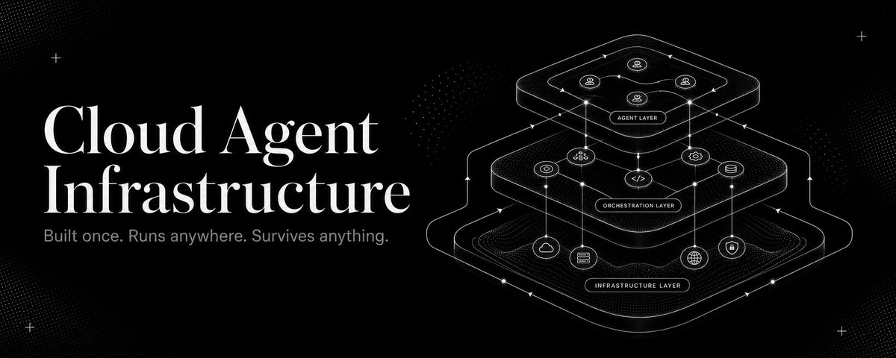

1. 执行模型：单进程 vs Worker / Scheduler
A1桌面 Agent 习惯“一个进程跑到底”；云里更常见的是把任务拆成可调度的 worker 单元，配合队列、重试和幂等策略运行。
Use- 长任务拆分成可恢复的小步骤。
- 把并发和排队交给调度层处理。
- 让失败可以重放，而不是整轮重来。
这条 X 文章从一个前提出发：多数 agent framework 默认的是桌面假设——单用户、单机器、单进程、本地文件系统、环境变量里放密钥。往云里走，真正要重做的不是 prompt，而是运行底座。

文章标题已经把问题定义出来了：cloud agent infrastructure 不是把本地方案搬到云里，而是把桌面假设拆掉，重新设计运行底座。
“Most agent frameworks today assume a desktop. One user, one machine, one process.”
这句话很关键：它不是在评价模型能力，而是在说大多数框架默认了单机运行条件。云端一旦面对多租户、隔离、持久化、恢复与审计，原先的设计假设就不够用了。把“桌面默认值”拆开之后，云端 agent 基础设施至少会多出四层工程问题。
桌面 Agent 习惯“一个进程跑到底”；云里更常见的是把任务拆成可调度的 worker 单元，配合队列、重试和幂等策略运行。
Use桌面环境常把 API key 放在本机环境变量里；云端要处理的是租户隔离、最小权限、密钥轮换和审计日志，而不是单纯“能不能读到 key”。
Use桌面 Agent 默认写本地文件；云端则经常面对短生命周期容器、共享存储、对象存储和工作区同步，文件不再天然等于“长期状态”。
Use桌面场景里，开发者能直接盯着屏幕看；云端场景里，平台必须主动提供 tracing、指标、日志、重试与 checkpoint，才能让黑盒任务可解释、可诊断、可接续。
Use如果只把桌面框架搬上云，你得到的通常只是一个远程壳；要成为云端基础设施，必须补齐平台层能力。
桌面 Agent 关注的是“把任务做完”；云端 Agent 基础设施关注的是“把任务在多租户、多机器、可恢复、可审计的条件下做完”。
它提醒你：真正难的是把单机脚本变成可运营平台，而不是继续堆 prompt。
如果你在做云端 Agent 平台，不要只问“模型强不强”，先问“任务怎么分发、怎么隔离、怎么恢复、怎么审计”。这些问题不解决，UI 再漂亮也只是壳。
把桌面脚本迁到云里，第一步不是改接口，而是重新设计执行单元、状态存储和观测面；否则你会得到一个“能跑，但不能运营”的系统。
保留原始链接、文章标题和发布时间，方便后续回看。
vxtwitter 返回的正文指向 X article：x.com/i/article/2062697992814313472。可视化主图已本地化，避免依赖热链。
这条文章的价值，不在于又讲了一遍 agent，而在于把云端 agent 的问题重新归位成基础设施问题。